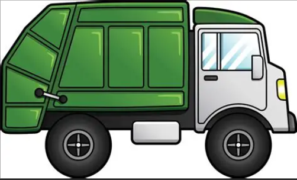

Camión—
Última actualización—
Velocidad—
Distancia recorrida—
Puntos recibidos · datos en—
¿Dónde está el camión?
Ya pasóFaltaDesvío

| Fecha | Camión | Chofer | Ruta | Estado |
|---|
| Clave | Placas | Modelo |
|---|
| Nombre | Correo | Teléfono |
|---|
| Ruta | Colonias | Horario | Camino |
|---|
| Hora | Tipo | Para | Mensaje |
|---|
| Nombre | Correo | Rol | Colonia |
|---|